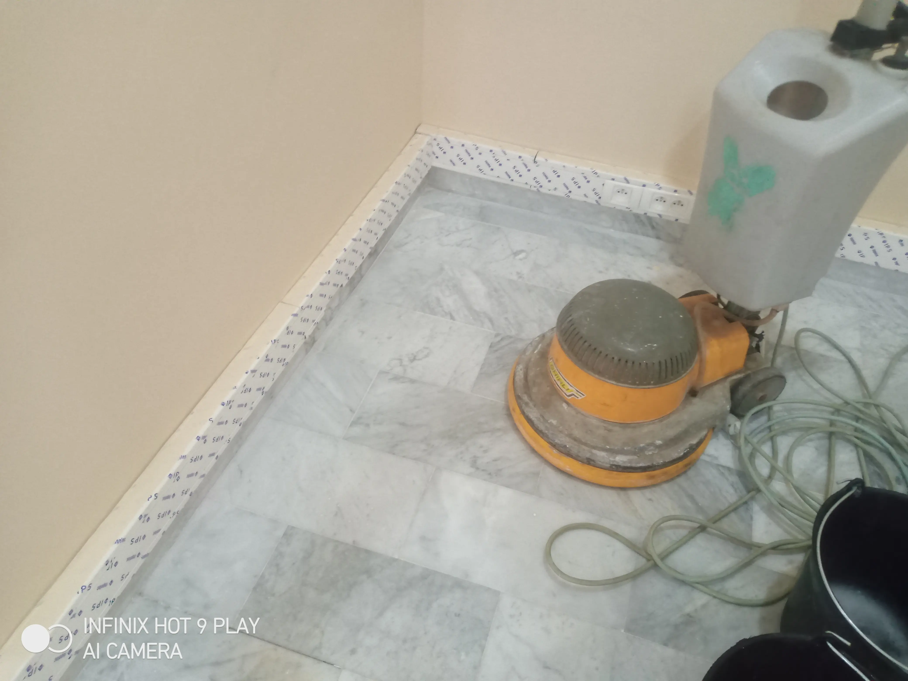

Société de Nettoyage
Société de Nettoyage
HVNET Nettoyage est une société de nettoyages Casablanca multiservices, compétente et reconnue, qui se propose de nettoyer toute vos surface. Ainsi que vos différents lieux de stockage.
En raison de l’importante fréquentation et des déplacements continus de matériaux. Vos entrepôts, hangars et locaux nécessitent une prestation spécifique et adaptée, aussi bien en matière de moyens humains que de matériel technique. Des opérations ciblées et spécifiques :
Face à ce nettoyage Casablanca et spécifique, HVNET Nettoyage utilise des machines professionnelles telles que monobrosse, aspirateurs industriels. Ainsi que l’utilisation de nacelle si besoin afin de remettre en parfait état de propreté vos entrepôts après travaux de construction, de rénovation ou tout simplement d’entretien régulier.
En effet, grâce à nos prestations et services de nettoyage à Casablanca personnalisés. Nous savons nous adapter à vos besoins et aux réalités de votre secteur afin de vous assurer que chaque intervention de notre part ne gênera pas vos activités.
Vos entrepôts, hangars et locaux de stockage seront plus fonctionnels et agréables si l’entretien et un nettoyage efficace et de qualité y sont pratiqués régulièrement.
La société de nettoyage Casablanca Garantir la propreté des locaux commerciaux et le nettoyage de bureau, le balayage, le nettoyage du sol, Désinfecter et nettoyer les locaux, l’entretien des moquettes et des parquets, le lavage de vitres, toutes ces prestations en nettoyage des locaux font partie intégrante de nos services destinés aux professionnels.
Nos services en nettoyage Casablanca qui concerne les bureaux et l’entretien des locaux comprennent :
Vous êtes situé a Casablanca vous avez des besoins plus spécifiques en entretien de bureaux ? . Notre entreprise de nettoyage Casablanca spécialisée peut vous fournir un devis gratuit en ligne pour nettoyage de votre local professionnel !
société de nettoyage casablanca

Que vous habitiez une grande maison à étages ou un simple appartement, les corvées de nettoyage ne sont pas toujours faciles et la majorité des gens n’ont pas toujours le temps de nettoyer correctement et en profondeur leur maison.
Vous êtes propriétaire ? Nous effectuons la remise en état de votre appartement ou maison avant la location ou la mise en vente.
Cependant, de l’entretien courant au nettoyage de moquette ou de parquet. Notre société de nettoyage HVNET Nettoyage intervient chez les particuliers pour des travaux de ménage simple comme du dépoussiérage, le lessivage, le lavage des sols, le nettoyage de vos vitres. Mais aussi sur des prestations complètes de nettoyage et de désinfection, comme la remise en état des sols, le nettoyage des vitres.
Société de nettoyage Casablanca Maroc
Le nettoyage des plafonds, la rénovation de vos menuiseries de fenêtre. Le nettoyage haute pression ou sur des gros « nettoyage de printemps » annuel de votre maison ou appartement. Professionnel du nettoyage, nous utilisons principalement des produits écologiques, non agressifs, et respectueux de votre environnement.
Alors, Ces produits de nettoyage sont disponibles sur demande ! Nous intervenons également sur un nettoyage après travaux à la demande de votre assureur sur Casablanca et partout au Maroc.
Notre société de nettoyage sur Casablanca et ses alentours peut se dérouler sur des missions de durées courtes ou longues, le nettoyage est réalisé par un agent de propreté ponctuel, compétent et discret !
On est des spécialistes de nettoyage Casablanca
Déplus, quelles que soient les surfaces à nettoyer, un nettoyage à haute pression et de qualité est la solution idéale pour redonner vie à toutes vos surfaces extérieures : Nous intervenons sur les murs, façades, terrasses, descentes de garage. Nos nettoyeurs à haute pression réalisent un nettoyage en profondeur des surfaces à traiter.
Gage de sécurité, nos agents de nettoyage sont formés avec excellence sur les nettoyeurs thermiques ou électriques. Faites appel à notre société de nettoyage Casablanca un véritable spécialiste qui saura vous conseiller pour un nettoyage minutieux et des services de nettoyage et entretien professionnels sur Casablanca et partout au Maroc !
En fin de compte, votre entreprise de nettoyage à Casablanca, HVNET NETTOYAGE. Vous propose un accompagnement complet au quotidien et des prestations de nettoyage adaptés à vos besoins. Découvrez nos prestations et notre offre de service destinés aux particuliers et aux professionnels de Casablanca.
Notre société de nettoyage est formée d'équipes expérimentées dans le domaine de l'hygiène et de la propreté. Pour vous proposer des prestations de qualité. Basé à Casablanca, et partout au Maroc .En fin, nous intervenons sur toute la périphérie. Fort de nos années d'expérience, notre société de nettoyage est réactive et vous accompagne s elon vos besoins et vos exigences sur toute l'agglomération du Maroc. Notre agence de nettoyage, œuvre au quotidien pour vous offrir des prestations de qualité. Notre entreprise de nettoyage Casablanca équipe tous ses agents de matériels et de produits professionnels.
Nous savons que notre métier est à la base de votre bien-être au travail, pour cette raison. Nous prenons à cœur toutes vos demandes et mettons tout en place pour répondre à vos besoins et être force de proposition. N'hésitez pas à prendre contact avec nous afin de recevoir un devis gratuit et trouver ensemble la solution la plus adaptés à vous.
Demander un rappel
Entrez vos coordonnées dans le formulaire et nous vous rappellerons.
Pour le nettoyage Résidentiel et Commercial
Notre personnel est formé pour nettoyer tout ce dont vous avez besoin !